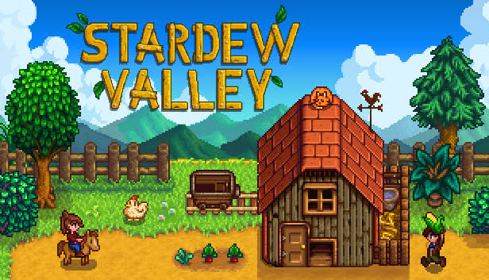
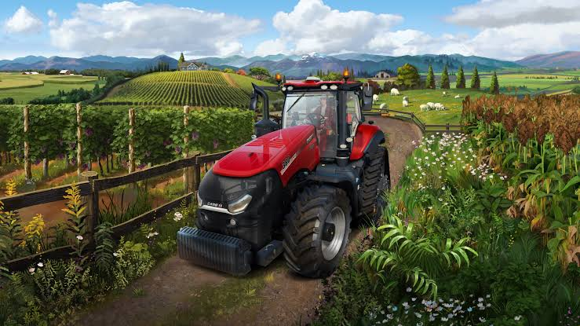
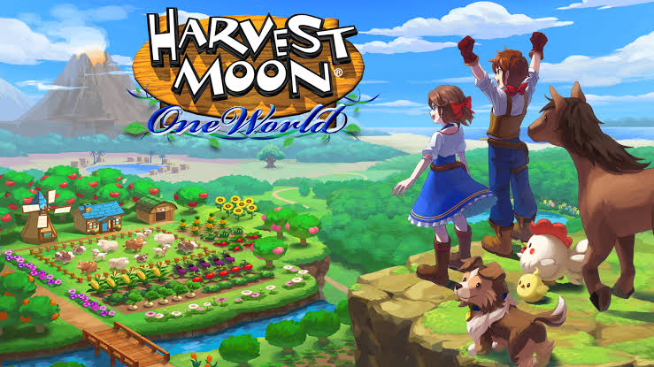
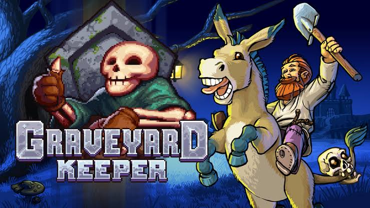

A relação entre agricultura e videogames tem se tornado cada vez mais popular e relevante no mundo dos jogos digitais. Essa conexão surge da capacidade dos videogames de simular e explorar aspectos da vida rural e das práticas agrícolas, proporcionando aos jogadores uma experiência imersiva que combina entretenimento com elementos educacionais.
Nos últimos anos, jogos de simulação agrícola ganharam destaque no mercado, com títulos que permitem aos jogadores gerenciar fazendas, cultivar plantações, criar animais e até mesmo interagir com comunidades virtuais. Esses jogos frequentemente apresentam mecânicas que incentivam o planejamento estratégico e a gestão de recursos, refletindo muitos dos desafios reais enfrentados por agricultores.
- Stardew Valley: Stardew Valley é um popular jogo de simulação agrícola desenvolvido por Eric Barone, também conhecido como ConcernedApe. Lançado inicialmente em 2016, o jogo conquistou rapidamente uma base de fãs devido à sua jogabilidade envolvente, estilo gráfico pixelado nostálgico e a rica experiência de vida no campo que oferece. Stardew Valley destaca temas como sustentabilidade, comunidade, e equilíbrio entre trabalho e vida pessoal. O jogo incentiva os jogadores a pensarem sobre a origem dos alimentos e os desafios enfrentados por agricultores na vida real. 
- Farming Simulator: Farming Simulator é uma série de jogos de simulação agrícola desenvolvida pela Giants Software. Lançada pela primeira vez em 2008, a série se tornou extremamente popular por sua representação realista das operações de uma fazenda moderna. O jogo permite que os jogadores experimentem a vida agrícola de forma detalhada, gerenciando todos os aspectos de uma fazenda funcional. Farming Simulator também é usado como ferramenta educacional em algumas escolas e programas de treinamento agrícola, ajudando a ensinar conceitos básicos de agricultura e gestão de fazendas. Além disso, o jogo tem sido elogiado por sua capacidade de relaxar os jogadores, oferecendo uma experiência de jogo calma e recompensadora. 
- Harvest Moon: Harvest Moon é uma série de jogos de simulação agrícola que começou com o título original lançado em 1996 para o Super Nintendo Entertainment System (SNES). Desenvolvido pela Marvelous AQL (anteriormente conhecida como Pack-In-Video) e publicado pela Natsume, Harvest Moon se tornou um marco na categoria de jogos de simulação devido à sua mistura inovadora de gestão agrícola e interação social. Harvest Moon é conhecido por seus temas de sustentabilidade, comunidade e vida no campo. O jogo promove a ideia de que o trabalho duro e a conexão com a natureza trazem recompensas e satisfação pessoal. Essa abordagem ressoa com muitos jogadores, proporcionando uma experiência relaxante e gratificante que contrasta com o ritmo frenético de muitos outros jogos. A série influenciou muitos outros títulos de simulação agrícola, sendo uma inspiração direta para jogos como Stardew Valley. A fórmula de Harvest Moon, que combina gerenciamento de recursos com desenvolvimento de personagens, se tornou um padrão para jogos desse gênero. 
- Graveyard Keeper: Graveyard Keeper é praticamente um equivalente a Stardew Valley, só que macabro. Neste jogo você é um coveiro que precisa administrar uma cidade repleta de cemitérios. O título tem o tema de “morte e cemitérios”, mas leva em consideração todos os elementos que um jogo de fazenda apresenta, desde administração de recursos a até mesmo plantações diversas. É preciso não apenas ter comida para sobreviver, mas também cavar covas, enterrar corpos, entre outros pontos relacionados à morte. Graveyard Keeper tem humor de sobra em um tom sombrio que diverte quem não tem medo de encarar assuntos possivelmente sensíveis ou polêmicos para algumas pessoas. 